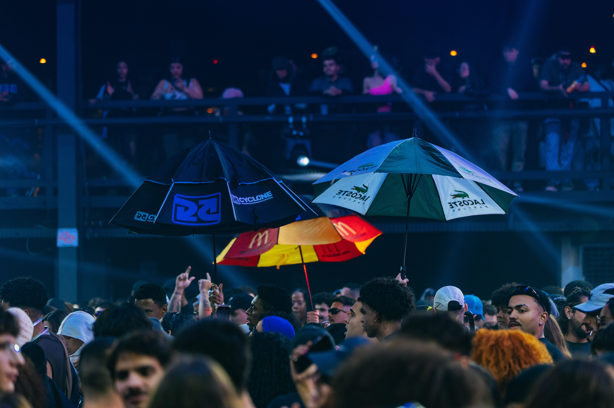

São Paulo — Zona Leste — 2026
Artistas, DJs e criadores da Zona Leste que fazem da música e da presença uma linguagem coletiva.
conheçaa história ↓

não é só cobertura. é território.
A umbrella não é acessório.
É um jeito
de chegar.
A umbrella é um símbolo da cultura funk paulista. Nos bailes, nos fluxos e nas redes, ela marca presença, cria conexões e expressa o vínculo com o território.
O coletivo Os Menino da Umbrella reúne DJs, MCs, produtores, criadores e agentes da cena periférica. É um encontro de pessoas e ideias que nasce na rua e movimenta a cultura de quem vive nela.

os menino da umbrella
OS MENINO
NA RUA.
A linha de frente muda de lugar,
mas nunca perde o ritmo.

Toque em um integrante para conhecer sua história.
01 DJ / produtorAKAPRECTO@djakaprecto
DJ / produtorAKAPRECTO@djakaprecto
conheça o artista
AKAPRECTO
DJ e produtor musical da Zona Leste de São Paulo, AKAPRECTO iniciou sua trajetória em 2020. Sua pesquisa passa por diferentes vertentes do funk, com ênfase na bruxaria, em sets de batidas intensas e atmosferas densas, conectados à pista e à vivência periférica.
Também explora hard techno, trap e house, com influências da black music e do samba rock. Entre estúdio, palco e coletivo, faz da música uma ferramenta de expressão e identidade.
Instagram · @djakaprecto02 DJDIGÃO ZL@digaozl_
DJDIGÃO ZL@digaozl_
conheça o artista
DIGÃO ZL
Natural de Itaquera, Digão ZL construiu sua conexão com o funk durante o auge da ostentação. A vivência nos bailes o levou a pesquisar novas sonoridades, como o funk bruxaria e o ritmado.
Em 2023, passou a atuar como DJ, transformando essa bagagem em sets envolventes e atentos à energia do público. Hoje, leva sua identidade às apresentações solo e às pistas com Os Menino da Umbrella.
Instagram · @digaozl_03 MC / produtor de palcoGAG@gag.zero1
MC / produtor de palcoGAG@gag.zero1
conheça o artista
GAG
Criado na Cohab II, em Itaquera, Gag começou sua trajetória no hip-hop em 2016 e criou o grupo CONTRXVERSIA. Sua pesquisa atravessa rap, trap, drill, grime e funk, em uma atuação que une rima, produção e palco.
Fundador da gravadora VALORES, participou da criação de Os Menino da Umbrella em 2023. No coletivo, apoia os DJs na produção de palco e contribui com suas letras nas produções musicais.
Instagram · @gag.zero104 DJ / produtorthR@__.thr
DJ / produtorthR@__.thr
conheça o artista
thR
Nascido na Zona Leste e criado na Cohab II, em Itaquera, thR formou sua identidade entre o hip-hop, os sound systems e os bailes funk. Foi um dos idealizadores e fundadores do SLAM Martin Luther King, dedicado à poesia e à literatura periférica.
Como DJ e produtor, explora bruxaria, agressivo, agudo, ritmado e ZN. Nas apresentações solo e com o coletivo, conecta música, estética e território para criar novas formas de pertencimento.
Instagram · @__.thr05 Produtor / articulador culturalMDC@mdc.beats
Produtor / articulador culturalMDC@mdc.beats
conheça o artista
MDC
Um dos fundadores e articuladores de Os Menino da Umbrella, MDC começou produzindo beats e ampliou sua atuação dentro da cena funk. Sua produção tem presença marcante na ritmada e em suas vertentes, com uma pesquisa ligada à pista e à identidade do gênero.
Sócio da Valores REC e atuante no Baile do Helipa, articula parcerias, desenvolve projetos e abre caminhos para o coletivo, fortalecendo as conexões entre artistas, público e cultura periférica.
Instagram · @mdc.beatsonde a coisa acontece
O BAILE
NÃO PARA.
Registros de eventos
★
04 / chega junto
Vamo
conversar?
Quer contratar o coletivo, propor uma parceria ou trocar uma ideia? Manda pra gente.